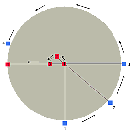

|
En una noche oscura,
con ansias en amores inflamada, ( ¡oh dichosa ventura! ) salí sin ser notada, estando ya mi casa sosegada. A oscuras y segura, por la secreta escala disfrazada, ( ¡oh dichosa ventura! ) a oscuras y en celada, estando ya mi casa sosegada. En la noche dichosa, en secreto, que nadie me veía, ni yo miraba cosa, sin otra luz ni guía sino la que en el corazón ardía. Aquésta me guïaba más cierta que la luz del mediodía, adonde me esperaba quien yo bien me sabía, en parte donde nadie parecía. ¡Oh noche que guïaste!, ¡oh noche amable más que el alborada!, ¡oh noche que juntaste amado con amada, amada en el amado transformada! En mi pecho florido, que entero para él solo se guardaba, allí quedó dormido, y yo le regalaba, y el ventalle de cedros aire daba. El aire de la almena, cuando yo sus cabellos esparcía, con su mano serena en mi cuello hería, y todos mis sentidos suspendía. Quedéme y olvidéme, el rostro recliné sobre el amado, cesó todo, y dejéme, dejando mi cuidado entre las azucenas olvidado.
San Juan de la Cruz ( 1542-1591 )
|
Hoy es el santo de San Juan de la Cruz.
Carmelita descalzo, compañero de Santa Teresa, doctor de la Iglesia, -máxima autoridad en mística cristiana- y poeta extraordinario.
Uno de mis santos favoritos.
De su biografía, recuerdo tres cosas: la miseria de su infancia (madre viuda y sin parientes, con tres hijos); su entrevista con Santa Teresa, y el episodio de su encarcelamiento y huida en Toledo.Gerard le dedica un post valioso, con links (todo en inglés). Acá hay algo de material en castellano.
Siempre me llamó la atención este pasaje de una carta (la 13):
-
... ninguna cosa deleitable y suave en que [el alma] pueda gozar
y deleitarse es Dios
[...]
Y por eso, para unirse con él se ha de vaciar y despegar de cualquier afecto desordenado de apetito y gusto de todo lo que distintamente puede gozarse, así de arriba como de abajo, temporal o espiritual, para que, purgada y limpia de cualesquiera gustos, gozos y apetitos desordenados, todo ella con sus afectos se empleen en amar a Dios.
Porque, si en alguna manera la voluntad puede comprehender a Dios y unirse con él, no es por algún medio aprehensivo del apetito, sino por el amor; y, como el deleite y suavidad y cualquier gusto que puede caer en la voluntad no sea amor, síguese que ninguno de los sentimientos sabrosos puede ser medio proporcionado para que la voluntad se una con Dios, sino la operación de la voluntad. Porque es muy distinta la operación de la voluntad de su sentimiento: por la operación se une con Dios y se termina en él, que es amor, y no por el sentimiento y aprehensión de su apetito, que se asienta en el alma como fin y remate. Sólo pueden servir los sentimientos de motivos para amar, si la voluntad quiere pasar adelante, y no más; y así, los sentimientos sabrosos de suyo no encaminan al alma a Dios, antes la hacen asentar en sí mismos; pero la operación de la voluntad, que es amar a Dios, sólo en él pone el alma su aficción, gozo, gusto, y contento y amor, dejadas atrás todas las cosas y amándole sobre todas ellas.
De donde, si alguno se mueve a amar a Dios no por la suavidad que siente, ya deja atrás esta suavidad, y pone el amor en Dios, a quien no siente; porque, si le pusiese en la suavidad y gusto que siente, reparando y deteniéndose en él, eso ya sería ponerle en criatura o cosa de ella, y hacer del motivo fin y término, y, por consiguiente, la obra de la voluntad sería viciosa; que, pues Dios es incomprehensible e inaccesible, la voluntad no ha de poner su operación de amor, para ponerla en Dios, en lo que ella puede tocar y aprehender en el apetito, sino en lo que no puede comprehender ni llegar con él. Y de esta manera queda la voluntad amando a lo cierto y de veras al gusto de la fe, también en vacío y a oscuras de sus sentimientos sobre todos los que ella puede sentir con el entendimiento de su inteligencia, creyendo y amando sobre todo lo que puede entender.
Y así muy insipiente sería el que, faltándole la suavidad y deleite espiritual, pensase que por eso le falta Dios, y, cuando le tuviese, se gozase y deleitase, pensando que por eso tenía a Dios. Y más insipiente sería si anduviese a buscar esta suavidad en Dios y se gozase y detuviese en ella; porque de esa manera ya no andaría a buscar a Dios con la voluntad fundada en vacío de fe y caridad, sino el gusto y suavidad espiritual, que es criatura, siguiendo su gusto y apetito; y así, ya no amaría a Dios puramente sobre todas las cosas, lo cual es poner toda la fuerza de la voluntad en él, porque, asiéndose y arrimándose en aquella criatura con el apetito, no sube la voluntad sobre ella a Dios, que es inaccesible; porque es cosa imposible que la voluntad pueda llegar a la suavidad y deleite de la divina unión, ni abrazar ni sentir los dulces y amorosos abrazos de Dios, si no es que sea en desnudez y vacío de apetito en todo gusto particular, así de arriba como de abajo; porque esto quiso decir David cuando dijo: Dilata os tuum, et implebo illud (Sal. 80, 11).
...
Pero lo que a mí me llama la atención (aunque, como se ve, no lo dice como algo paradójico ni novedoso; más bien como algo obvio y sabido) es eso de distinguir el amor por un lado y el sentimiento (el gusto, el deleite) por otro.
En lo primero, el alma (más precisamente, la voluntad) es activa, el amor es 'acto', 'operación' (del alma, insisto: no se trata de 'actos externos'), es algo que el alma 'hace'. En lo segundo en cambio, cuando de sentimientos hablamos, el alma es pasiva ("pasiones") es algo que el alma aprehende.
Pero andá a decirle a los letristas románticos (y a los redactores del DRAE!) que "el amor no es un sentimento"...
T.S. O'Rama cita (y adhiere a) un comentario de John de Disputations, sobre el vaso de whisky que suele acompañar al blogger católico de por allá...
(de paso, el mismo post de Disputations trae un lindo chistecito sobre el tema, pero no resulta muy traducible; no por cuestiones idiomáticas sino religiosas).
Bueno. Estos yanquis tendrán sus cosas buenas, no digo que no. Pero, por más que adopten esa actitud católica-chestertoniana de benevolencia hacia los humildes placeres terrenos, tienen algunas ignorancias graves (no me atreveré a decir 'culpables', no quiero juzgar demasiado severamente) sobre los goces de la vida. Y al menos en algunos aspectos, los argentinos podemos dar alguna lección.
 Whisky ... bah!
Whisky ... bah!
Me animaría a apostar que ni siquiera saben lo que este par
de imágenes significa. Y en estas cosas no sirve de mucho
la "educación a distancia"... pero, for the sake of completness,
señalemos: se trata de un mate
y de un plato de facturas
(combinación tan armónica como la de pizza y cerveza).
No entraré en detalles sobre formas de preparar el mate
y sus variantes (aunque no dejo de advertir que ponerle edulcorante
es una de las peores herejías que conozco), así como las
especies de facturas, con sus nombres curiosos (
bolas de fraile, suspiros de monja, sacramentos, vigilantes
), y los bizcochitos de grasa, cuernitos, etc.
En el último link hay alguna breve información; a objetar alguna definición que no hace justicia a la relevancia del tema ("dulce de leche: like caramel, but not really") y la mención del queso roquefort como ingrediente de relleno de las facturas (what?? never!!).
Teorema: Alegrarse del mal que le ocurre (o que comete) mi "enemigo" [*] es siempre un pecado.
Corolario 1: Justificar racionalmente esa alegría, y llamarla virtud, es (además) una hijoputez.
[*] A desarrollar: tiene uno derecho a "tener enemigos"? tiene uno derecho a odiarlos?
Otras temas a desarrollar : ¿Basta el grado de hijoputez del corolario 1 para escribir en página 12 y ser considerado un intelectual virtuoso en la argentina de hoy ? ¿Son necesarias otras vueltas de tuerca -u otros grados de iniciación ? ¿Es necesario (o ayuda, o perjudica) ser judío y soltar en gotas el odio hacia el cristianismo ?
Hace un tiempo, javier de Maldita sea declaró una guerra particular contra los adverbios de modo (lo que terminan en -mente).
En cuanto a mí, estoy sumamente (ups!) cansado de leer una palabra que ha invadido el castellano actual: el adjetivo "patético", en su sentido peyorativo.
Aunque -en ese sentido- no quiere decir nada definido, la palabrita parece servir para descalificar-hundir-despreciar-desechar a cualquier persona, razonamiento o acto humano, sin apelaciones.
"Es patético...", dice uno; y aunque el destinatario del calificativo sea un gigante y uno un enano, ... uno parece haberlo aplastado con sola esta palabra, como si se tratara de la piedra de David. Lo "patético" es tan despreciable, reclama un repudio tan inmediato e incondicional de 'todos nosotros', (es un recurso claramente 'retórico': es decir, está orientado 'al público') que no merece que le dediquemos más que esa palabra, un menear de cabeza, y a otra cosa.
Un adjetivo debería adjetivar, debería manifestar una cualidad del sustantivo; en su acepción original patético es precisamente aquello "capaz de agitar una pasión"; el uso actual ha empobrecido la palabra, trasladando el foco del objeto al sujeto (cuando digo "X es patético" no digo nada preciso de X, sólo digo algo de mí -y de nosotros- : "yo desprecio a X"); y además se restringe a una pasión muy particular y muy baja (la irritación o el desprecio que causa la estupidez , por ejemplo).
No se trata sólo de el empobrecimiento idiomático que esto
implica; no se trata sólo del disgusto por las palabras de moda
(sobre todo cuando se usan en ambientes de medianas
pretensiones intelectuales y aun literarias); se trata también
de que la palabra tiene un raíz y una familia
venerable (de pathos:
pasión, padecer, pasivo, impasible, simpatía, empatía, antipatía, etc...).
Da pena (da miedo) pensar el sonido que tendrá -si esta moda
no se extingue rápido- para la generación joven de hoy
cosas como "La sonata patética de Beethoven"... por no hablar
de "La Pasión de Cristo".
Sí, ya sé que el arzobispo Law de Boston al final acordó con el Papa su renuncia. No es un tema que esté siguiendo muy de cerca, la verdad; en los weblogs católicos de por allá se habla mucho de la cuestión -no es para menos-, en distintos tonos -no es para menos. Por ejemplo...
13 de diciembre, fiesta de Santa Lucía, mártir italiana del siglo III, que ya en el siglo IV era invocada por la Iglesia. Patrona de la vista. Se la ve (en estampitas y estatuas) sosteniendo una bandejita con sus dos ojos (ugh... soy un poco impresionable para esas cosas...) que -según leyenda de autenticidad dudosa- le arrancaron en su martirio, durante una de esas persecuciones romanas anti-cristianas.
Me gusta que caiga hoy, buen momento (acá en argentina) para implorar la gracia de ver bien.
En las lecturas de hoy figuran estas palabras de Isaías :
-
Si hubieras estado atento a mis leyes, la dicha te habría inundado como un río.
Habrías sido fuerte como las olas del mar, y tus hijos, numerosos como los granos de arena,
y tu nombre no sería nunca arrancado o borrado de mi vista.
Para porteños cinéfilos, o con berretines de serlo:
Hoy a las 20 hs, en malbacine, (Figueroa Alcorta 3415; a $4, si no me equivoco) proyectan Testigo de cargo, (1957, Billy Wilder, con Tyrone Power y Marlene Dietrich; sobre libro de Agatha Christie). Según dicen, tiene lo suyo.
-
IRONÍA: forma agresiva del pudor...
. . . . .
MÁSCARATu verdad es demasiado pura, por consiguiente, demasiado vulnerable. Entonces para protegerla tomas una máscara de ironía o de ligereza o de vulgaridad o de snobismo.
(No todas las máscaras son nobles, y el hombre no tiene que esconder más que su miseria; y si hay máscaras nobles sobre semblantes viles o falsos, también se encuentran sobre rostros nobles máscaras de bajeza y vanidad: escondemos bajo una máscara todo lo que no es confesable espontáneamente, todo lo que, en bien o en mal, exceda las conveniencias del medio en que vivimos. Ciertas virtudes solitarias son tan inconvenientes como los más bajos móviles...).
Tomas entonces una máscara, para satisfacer tu pudor o tus comodidades cotidianas; pero lo haces con la intención de no engañar al mundo y de que, bajo esa máscara, se adivine tu verdad.
Ten cuidado: los hombres tomarán en serio esa máscara más a menudo de lo que puedes imaginar, y la confundirán durante bastante tiempo, si no siempre, con tu verdadero rostro.
Cuántos hombres han muerto sin haber encontrado una
mirada bastante pura para quitarles su máscara!
Pienso, por ejemplo, en el caso de Baudelaire...
Creo, sin embargo, en la virtud de la máscara.
La máscara opera una selección alrededor de nosotros.
Quienes sean capaces de penetrar a través de ella son dignos de amarnos.
Por eso Dios lleva tantas máscaras...
Gustave Thibon
Dos buenos posts de weblogs yanquis:
Pensando en el acertijo de la muchacha del lago, paso por Plaza de Mayo; copada por las Madres de la misma, un acto por no sé qué.
Enormes pancartas con lo de siempre ("No pagar la deuda", parece el motto más destacado) y un cartel con la leyenda:
-
Madres de Plaza de Mayo
Ni un paso atrás
Pero algunos "avanzan" caminando en círculos.
Una especie de diccionario de idioms/expresions, expresiones compuestas en inglés. Se ve útil.
Caí ahí tras leer esta tira ... no estaba seguro del significado de come to grips with.
-
...
tu madre me vio
cuando te besé, velay ;
triste me quedé
cuando te llevó por'ái.
Y ya que estamos:
|
¿Dónde está Dios? Por ái. Está en los justos y está en los pecadores en los templos vetustos y en la efímera pompa de unas flores. Para que no lo adores semanalmente sólo, a plazos justos está en la noche insomne de disgustos y en la aurora de férvidos colores. Escondido en el fondo de tu fuerte paciencia o tozudez y en esa frágil tenue esperanza de vencer la muerte y en esa atada inteligencia ágil reina cautiva que conoce cierto que hay una puerta y -no sé dónde- un Puerto. Leonardo Castellani |
Solución del acertijo de la muchacha en el lago.
La chica puede escapar; la solución que explico, graficada en la figura, es la más simple.
Este tipo de problema (dos 'jugadores' con objetivos
contrapuestos) puede resultar complicado porque
la estrategia óptima de cada uno depende de las acciones
del otro.
Pero acá todo se aclara si pensamos primero
en la estrategia óptima del hombre: como acá no hay
'inercia', la estrategia depende de las posiciones únicamente;
y es sencillo ver que al hombre siempre le conviene
correr hacia el lado que lo acerca a la mujer
(más precisamente: el hombre tira un diámetro
imaginario que pasa por su posición actual, y se dirige
siempre hacia el semicírculo donde está en ese
momento la muchacha, independientemente de su movimiento).

O sea: el hombre trata de colocarse en su posición
óptima, del modo que la mujer quede entre él y el centro
del círculo.
Contrariamente, lo óptimo para la mujer
sería mantener al hombre en el lado opuesto, con
el centro del lago en medio de los dos.
¿ Puede ella -su velocidad es cuatro veces menor-
mantener esa oposición ? Puede, mientras pueda
"girar a la misma velocidad" que el hombre: mejor dicho,
si puede igualar su "velocidad angular". Pero la velocidad
angular es w = v / r ; ergo, mientras su radio de giro
(distancia al centro) sea pequeño, ella puede igualar la velocidad
angular del hombre, y le quedará un resto de "velocidad
radial" para alejarse del centro. Así sucede durante el
trayecto 1 - 2 - 3 (obsérvese que ambos se mantienen
en oposición).
Pero al llegar al punto 3, (distancia al centro = R/4) la mujer tendría que invertir toda su velocidad en el movimiento angular si pretende mantener la oposición, y quedaría girando en un círculo. Pero resulta que ahora está lo suficientemente cerca de la orilla para llegar antes que el hombre. Se dirige entonces directamente al punto 4 (distancia = 3/4 R ) mientras que hombre tiene que recorrer 3.14 R al cuádruple de velocidad... Por un pelo, pero no llega.
Anota Gardner que la muchacha también puede seguir en linea recta, pero siguiendo la velocidad (tangencial) del punto 3, (hacia abajo, en lugar de a la derecha, en la figura) con lo cual tarda más en llegar a la costa pero lo hace a más distancia del perseguidor.
PD: Juan Pablo puso otro lindo acertijo, levemente relacionado con éste.
Hoy se celebra la fiesta -muy importante en Mexico, sobre todo- de la virgen de Guadalupe.
Classic Catholic, blog de Robert Gotcher, is back (via Flos Carmeli).
A notar: un post sobre la ordenación de sacerdotes con tendencias hom0sexuales (interesante por el equilibrio; no puedo decir que estoy de acuerdo o no, no tengo idea). Y el link a un artículo [buscar 'Blogshead'] fuertemente (e inteligentemente) crítico hacia los blogs católicos... desde un punto de vista católico; en la visión del autor, cosas como las viejas listas de correos son mucho más sanas que los weblogs católicos mayoritarios... (crítica frívola, autocomplacencia, egotismo, etc). Algo de eso hay, seguro... también acá, seguro...
Otro anti Papá Noel .
En este caso, un cura alemán. Con loguito y todo.
Vamos todavía.
Sigo -cada vez más entusiasmado- con la difícil pero fascinante lectura del "Postcriptum" de Kierkegaard (y cada vez me parece más increíble que no haya traducción española).
Comentaba el padre Castellani, (en "De Kirkegord a Tomás de Aquino"):
-
"Postcriptum no científico definitivo a las Nonadas Filosóficas"
Éste es un inmenso tratado filosófico-polémico-humorístico
en 763 páginas (edic. alemana) donde se contiene
toda la filosofía de Kirkegord.
He comulgado con pasión con esas páginas. He percibido
el genio de Kirkegord y su intuición
profundísima de la fe religiosa y el alma humana.
Lo sentí cerca de mí, lo llamé "hermano".
Le pedí
a Dios una señal de que se había salvado; y ese
mismo día surgieron los versos 'kierkegordianos' del
poema "Jauja"; que es el mejor de los que he escrito.
- "No haga más -me dice Mandrioni- literatura autobiográfica"...
- "No puedo dejar de hacerla, por ahora; no me interesa
la objetividad", le contesté ... mal.
No es lo mismo lo subjetivo que lo autobiográfico.
Lo subjetivo es expresar la propia existencia en "estilo
indirecto"; eso hace K. (y lo teoriza), San Juan de Yepes,
Santa Teresa... y Jesucristo.
-
... hacerse subjetivo debería ser la
misión asignada a todo ser humano, así como
la recompensa suprema -la felicidad eterna-
sólo existe para la persona 'subjetiva', o
más correctamente, llega a existir para
aquel que se torna subjetivo. Además,
esta tarea debería dar suficiente que hacer
a todo hombre, mientras viva; nunca, pues,
podría suceder al hombre que se toma
en serio su ocupación eso de haber
terminado con la vida, antes de que la vida
haya terminado con uno.
[...]
Si en un examen escrito han dado tres horas
para desarrollar los temas, no hace
diferencia que el estudiante termine antes
o que use todo el tiempo otorgado. Aquí, pues,
la tarea a cumplir es una cosa, y el tiempo
en que se cumple es otra. Pero cuando la misma
tarea es el tiempo, terminar antes, adelantarse
al tiempo, no es algo laudable. Como si, por ejemplo,
la tarea fuera entretenerse durante todo un día:
si uno termina tal tarea al mediodía, esa velocidad
no es precisamente un mérito.
Y así sucede cuando la tarea es la vida. Haber terminado
con la vida, antes de que la vida haya terminado con uno,
significa que no se ha cumplido la tarea en absoluto.
Soren Kierkegaard
Postcriptum... pag 164 (traducción propia)
Después seguiremos citando.
Esperando el Nacimiento. Las lecturas de la misa de hoy hablan del consuelo y el alivio, de la fortaleza que da Dios para soportar fatigas y dolores.
La primera lectura, de Isaías:
y robustece al que está débil.
Mientras los jóvenes se cansan y se fatigan
y hasta pueden llegar a caerse,
los que en El confían recuperan fuerzas,
y les crecen alas de águilas.
Correrán sin fatigarse
y andarán sin cansarse.
Cuando escuché eso último, me acordé de Simone Weil comentando en algún lado (cito de memoria) cuánto le dolían esas palabras de Isaías, de que "los que aman a Dios nunca están cansados", de esa energía sobrenatural que da la inhabitación de Dios en el alma, y que ella no veía en sí misma.... Me pregunto ahora si se tratará de ese versículo.
El salmo 102 (primera mitad):
bendice a Yahveh, alma mía, no olvides sus muchos beneficios.
El, que todas tus culpas perdona, que cura todas tus dolencias,
rescata tu vida del sepulcro, te corona de amor y de ternura,
satura de bienes tu existencia, mientras tu juventud se renueva como el águila.
Yahveh, el que hace obras de justicia, y otorga el derecho a todos los oprimidos,
reveló sus caminos a Moisés, a los hijos de Israel sus hazañas.
Clemente y compasivo es Yahveh, lento para la ira y lleno de amor;
no se querella eternamente ni para siempre guarda su rencor;
no nos trata según nuestros pecados ni nos paga conforme a nuestras culpas.
Hacen falta ojos como de niño para sentir la belleza de los salmos; me gusta imaginar que David los tenía; y me hago la ilusión de tenerlos -a veces y apenas-; al menos, esto alcanza a emocionarme, a veces.
Y para rematar, las palabras enormes de Jesús :
-
Venid a mí todos los que estáis fatigados y sobrecargados, y yo os daré descanso.
Tomad sobre vosotros mi yugo, y aprended de mí, que soy manso y humilde de corazón; y hallaréis descanso para vuestras almas.
Porque mi yugo es suave y mi carga ligera.
Foto en Página 12, que festeja con bombo y platillos un paso dado en Uruguay hacia el aborto legal; y el comentario de siempre de la izquierda militante. Como siempre, ni una palabra sobre la cuestión que importa -antes que nada- (la de dilucidar si "eso" que se está extirpando es algo así como un tumor de cuerpo de la madre o algo así como un ser humano cuya 'vida' hay una obligación grave y sagrada de respetar). Pero del tema del aborto hablaré si acaso otro día.
Lo que no deja de asombrarme esto: se entiende que
uno puede estar a favor o en contra de algo (como el aborto)
por 'pasiones' inflamadas por partidos/grupos/ideologías/religiones,
como banderas propias; lo que no termino de entender es
que la izquierda eanrbole esta bandera con esta pasión;
aún suponiendo que la causa fuera justa, siempre sería
una causa triste, que deberían defender con desgano,
con sólo mirar a dónde conduce -si esa causa se llevara al extremo...
(cosa que no se animan a pensar).
Me parece una confesión de su propia impotencia
para 'morder' la realidad, un claro 'mostrar la hilacha'.
Dejando de lado la manera tristemente cómica de referirse
al 'cuerpo' de la madre como algo 'de su propiedad'
(ellos, tan enemigos de dualismos; ellos, que se ríen
de los platonismos y de la existencia de algo-así-como-un-alma);
ellos, los exaltadores del cuerpo, no ven la trivialización última
que
implica eso de referirse al cuerpo como "una cosa mía",
como algo externo a mi propio yo, como una "propiedad",
como un auto, una computadora o un horno a microondas?
Pero sobre todo: no ven que -en esto como en todo- son
hijos del liberalismo iluminista, del individualismo capitalista
que se supone combaten ? (hijos de ricos, asqueados de sus
padres, que se creen rebeldes y son la misma cosa).
No se les pasa por la cabeza que el espíritu con que ese tipo de mujer dice "mi cuerpo es mío, y con él hago lo que quiero", (ese delimitar y ejecer su 'poder', ese negarse a aceptar intromisiones de "instancias superiores" ) es en el fondo el mismo espíritu con el que el capitalista dice "mis propiedades privadas son mías y con ellas hago lo que quiero" ? Los mismos (en el sentido dostoyevskiano) 'demonios'; la misma ceguera y -de última- la misma criminalidad.
Hay que ser un zurdo demasiado independiente de la manada para pensar esas cosas (como Pasolini); no suele ser el caso del lector de Página 12, sin dudas.
( PD: De entre las cosas que tendría que tocar, si toco el tema del aborto en general, estaría -lo que no toco acá- la posición "militante" católica al respecto; la cual no puedo decir que me satisfaga. )
-
Vuelvo a casa a las 18:30, después de una larga comida en la Casa Gabriella,
seguida de dos horas de conversación con Jung. A su lado, en la mesa, después
en su apartamento, para hacerle una entrevista.
Estoy extenuado. Comienzo por anotar algunas ideas.
Pero no podré hablar de esa religiosa católica a la que había curado de una neurastenia y que le había confesado, al final, que no creía desde hacía muchos años; no creía ni siquiera en Dios -sin embargo, ahora sabía que moriría en el seno de la Iglesia-.
No podré hablar tampoco de las experiencias de Jung con Freud, que, afirma, no poseía ningún «psychological insight» y había construido su teoría de la sexualidad por resentimiento.
El sueño de Jung, en 1907, al que aludiré en la entrevista, se
lo había contado a Freud. Jung verá en él más tarde la primera
alusión al inconsciente colectivo. Según Freud, su sentido
era el siguiente: quería matar a su mujer, su cuñada y su
suegra -porque en la cueva más profunda había
visto, en su sueño, muchos huesos, pero solamente tres cráneos-.
En otra ocasión, en no sé qué congreso, cuando Jung le reprochó el
dar una explicación errónea de la reforma de Akhenatón
como una rebelión contra el Padre (pues todos los faraones
borraban de las inscripciones el nombre de su predecesor), Freud se desmayó.
Durante mi larga conversación con él, hoy, me he dado cuenta de hasta qué punto deseaba que relatase que él también había tenido experiencias «numinosas». Me las ha contado. ...
...
Freud le decía: Debemos imponer el psicoanálisis como un dogma,
para protegernos contra el ocultismo. Occidente está amenazado por el ocultismo.
Jung comenta: tiene miedo de que los fantasmas existan en
realidad.
Segunda obsesión de Freud: la Infame, la Iglesia.
Cuando llegan ambos a Nueva York, Freud mira los rascacielos, después volviéndose hacia Jung: «Si supiesen qué dinamita les traemos.»
Del Diario de Mircea Eliade
25 de agosto de 1952
De los acertijos de Martin Gardner, me gusta este (es muy indicado para una clase práctica de Física I ; velocidades angulares y esas cosas):
-
En el centro de un lago circular, hay una muchacha en un bote.
En la orilla, un hombre, a pie... con malas intenciones. Ninguna
persona cerca (y ningún celular) para pedir ayuda. La chica
quiere escapar del hombre (que no sabe nadar),
y sabe que, una vez en tierra, ella corre más rápido.
Pero en cambio la velocidad del hombre corriendo
es mayor que la de ella remando: cuatro veces más.
Asumiendo todo lo que se asume en estos problemas matemáticos (cada personaje es un matemático perfecto que conoce en cada instante la posición del otro, y puede cambiar instantáneamente la dirección de su velocidad) se trata de averiguar si la chica puede llegar a tierra sin que el hombre la esté esperando en el punto de desembarco...
Es fácil ver que si ella encara directamente hacia la orilla (opuesta a la del hombre en su posición inicial), no llega a tiempo ( 4 > 3.1416... ) ; hay alguna estrategia mejor ?
Reportaje en Clarín a Celeste Carballo (publicidad de un recital próximo). La chica ha probado de todo, ya se sabe : bisexual 'como lo somos todos', enseña; fue estudiante de psicología y fue vegetariana 'fundamentalista' , ahora es 'anti tabaco' estricta y toma agua de napa; lee a Jung y también el horóscopo: 'buscaba la perfección. Es que soy virginiana, no lo puedo evitar'. Remera de Marilyn Manson, puching-ball, Frida Kahlo, jazmines, gatos.
Una foto de la argentina posmoderna:
"Freud 'ya fue'. Hace años que he descubierto el pensamiento mágico de Jung. Me parece superconectado con una realidad cósmica alucinante. Me interesa mucho seguir su pensamiento: hay una corriente que conecta con el budismo, con una inteligencia que no tiene nada que ver con la ciencia.
Los 60 equívocos de la Biblia en los que todos creen es una nota en La Nación de hoy.
"millones de católicos están convencidos de que... " ... dice, y sigue una mezcolanza de arbitrariedades que recoge el "polémico libro" que la nota se encarga de publicitar.
Para mí sería más polémico llamar "católicos" a ciertos creyentes, pero bueno... En todo caso, crean lo que crean esos "católicos", no me parece muy grave. Lo grave sería que creyeran en los periodistas.
Dice la nota:
"por más que de chicos nos hayan enseñado que Eva mordió una manzana roja". Prácticamente ningún chico ha recibido esa
enseñanza (levanten la mano...) : ni los padres,
ni las psicopedagogas, ni las revistas "para padres", ni las revistas
"para chicos", ni los dibujos en tv... a absolutamente nadie se le ocurre
mencionar el episodio de "la manzana" si no es para hacer chistes;
la única vez que el chico puede "aprender" eso es en el catecismo,
y aún ahí, no es un tema que se suela tocar. Lo de la "manzana"
es un lugar común, proveniente de la vulgarización
de la historia del génesis; y no tiene la más mínima importancia.
"No pretendemos demoler nada, sino rectificar las mentiras de la tradición cristiana, como la que asegura que los Reyes Magos eran tres, cosa que no figura en los Evangelios, donde ni siquiera está demostrado que eran reyes".
Brillante. O sea, que si no figura en los evangelios, es mentira.
Qué estupidez. Si me dijeran: "el número de los reyes magos, y
su misma condición de reyes, proviene de una antigua tradición;
pero no figura en las escrituras" ... estaríamos de acuerdo. Pero claro,
eso no sonaría tan publicitariamente "desmitificador" y nadie compraría
un libro para saber algo tan poco interesante y que cualquier católico
mínimamente culto sabe.
Pero ahora viene lo asombroso. Después de decir que "es mentira" que los magos sean tres porque el evangelio no lo dice, estos refutadores de leyendas afirman con su típica suficiencia: "San José, por su parte, no era ningún viejecito -cuando se casó con María debía tener entre 18 y 24 años- y no trabajaba de carpintero, sino como constructor. Y esto ?? Esto está en los evangelios ? No. Pero claro, como tampoco lo afirma la tradición (sino algún "estudioso moderno") debe ser verdad.
Y hasta pretenden saber cómo era la cara de Jesús... según "un intento efectuado recientemente, dándole a una computadora los datos antropométricos "... (datos antropométricos que habrán sacado de los evangelios, seguro). Buenísimo. Prueben darle a la misma computadora los datos antropométricos del periodista, a ver si les sale parecido.
El resto que sale en la nota (que el 25 de diciembre es fecha convencional, que los mandamientos pueden contarse de distintas maneras) tienen parecido interés.
Y si algo faltaba para confirmar la imbecilidad de la nota, es el uso 'positivista' de la palabra "desmitificar" , como sinónimo de "desmentir"... Uf...
Es una estupidez esto de los números redondos, pero bueh... hoy pasamos las 50000 visitas, desde nuestros comienzos a fines de abril.
Felicitaciones pues al ignoto visitante 50000, de EEUU, que llegó acá buscando "Fotos de uso de los extintores" (felicitaciones por no estar buscando cosas peores, digo...). Espero que haya disfrutado su visita. Vuelva pronto.
Justo coincidió
con el agregado de un paginita de "preguntas" ( a modo de "FAQ"; a su izquierda)
que hice recién , motivado por algunas preguntas recibidas hoy
en un mail. Es muy breve, pero pregunten y lo agrando.
Y gracias a todos los que de una u otra manera.
-
El espíritu no está forzado a creer en la existencia de nada (subjetivismo, idealismo absoluto, solipsismo, escepticismo: ver las Upanishadas, los taoístas, Platón: todos usan esta actitud filosófica a modo de purificación).
Es porque el único órgano de contacto con la existencia es la aceptación, el amor.
Por eso, belleza y realidad son idénticas.
Por eso la alegría y el sentimiento de la realidad son la misma cosa.
Simone Weil
La gravedad y la gracia
¿Qué interés se te sigue, Jesús mío,
que a mi puerta cubierto de rocío
pasas las noches del invierno escuras?
¡Oh cuánto fueron mis entrañas duras,
pues no te abrí! ¡Qué extraño desvarío,
si de mi ingratitud el hielo frío
secó las llagas de tus plantas puras!
¡Cuántas veces el Ángel me decía:
«Alma, asómate agora a la ventana,
verás con cuánto amor llamar porfía»!
¡Y cuántas, hermosura soberana,
«Mañana le abriremos», respondía,
para lo mismo responder mañana!
Lope de Vega (1562-1635)
Curiosidad: Acá hay una versión en inglés de Longfellow.
Laura me objeta mi afirmación de que la solemnidad de la Inmaculada Concepción es "la fiesta mariana más importante":« María Madre de Dios es más importante y es su fundamento. La fiesta de la Inmaculada Concepción es la más popular y en ese sentido sería la más importante. »
Bueno. I stay corrected. En parte al menos.
En realidad, no es muy afortunada mi expresión
de "la fiesta más importante", por ambigua e imprecisa.
Pero la corrección también podría ser criticable...
Creo que nos pondremos de acuerdo si discriminamos
la importancia del título (o advocación)
y de la fiesta. Creo que es en el primer
sentido en el cual puede decirse, sin lugar a dudas,
que la Maternidad de Dios es el título fundamental
de María, del cual dependen jerárquicamente los otros;
esto es una cuestión teológica.
En el segundo sentido, hablamos de la relevancia
que tiene y ha tenido el hecho "humano" de la
fiesta o solemnidad; esto es una cuestión histórica.
Desde este segundo punto de vista, decía yo que la fiesta
(no el título) de la Inmaculada es la más importante:
de un lado, el 8 de diciembre es conocido como "el día
de la Virgen", mientras que el 1 de enero (fiesta
de María Madre de Dios) es una cosa relativamente
nueva y que ni antes (en su fecha anterior) ni ahora
(al comienzo del año) tiene la misma relevancia...
en cuanto fiesta, vuelvo a decir.
Dicha esta defensa-a-medias, igual reconozco que :
1) no es muy importante ni muy pertinente decir que
la Inmaculada es la fiesta mariana más importante
2) aún con las aclaraciones anteriores, sigue siendo
discutible (por ejemplo:
acá dice que la Asunción es la fiesta más importante)
3) y menos justificable todavía es lo de que sea la fiesta "más tradicional"
(no es ciertamente la más antigua)
Tarde tranquila de domingo; mateando y leyendo en el balcón.
En el edificio de enfrente vive un matrimonio con un chico; llegaron al barrio poco después que yo (un año y medio), recién casados, al parecer; la mujer ha puesto sobre la puerta de entrada (el departamento es de un ambiente, y alcanza a verse casi todo) un imagen de "Jesús misericordioso"; el esposo era uno de los más entusiastas golpeadores de cacerolas un año atrás. Veo crecer al chico, que llegó recién nacido y hoy camina (el mes pasado enrejaron el balcón...) y empieza a hablar.
Y recién veía a la mujer armar el arbolito de Navidad (suele hacerse hoy, el día de la Inmaculada Concepción) y el chico mirando...
Hace poco recibí un mail de Matías, un español, sumándose con entusiasmo a un comentario anti Papá Noel que hice... y tirándose también contra el dichoso arbolito:
-
... Mi nivel de aceptación del citado personaje es un punto por debajo de "asco" y dos por encima de "aborrecimiento". Tengo 36 años y en mi infancia, aquí, en España jamás conocí ni ví al tal personaje. Eran los Reyes Magos los personajes mágicos de la Navidad.
Como por ensalmo, y alrededor de los años ochenta, comenzó la lenta pero segura invasión de este monstruo procedente de la Aldea Global, o más bien de su capital, EL IMPERIO (prefiero no escribir ni pronunciar su verdadero nombre), hasta el punto de que el maldito cabrón sale hasta en la sopa.
Y digo yo: ¿quien és este imbécil vestido de rojo? y añado: ¿qué coño son los árboles de Navidad y para qué sirven? ¿qué cojones tienen que ver con mi cultura el puto anglosajón arbol pa que me lo metan a la primera de cambio?
Pero claro que lo de Papá Noel es mucho más moderno (y con connotaciones consumistas mucho más evidentes) que lo del arbolito. Leo en el diario de Leon Bloy, en diciembre de 1907, sus quejas al tener que apuntalar el árbol en la maceta (al parecer, una planta dendeveras), seguramente para dar alguna alegría a sus hijas; pero -cuándo no- no paraba de refunfuñar:
-
... No me gustan los árboles de Navidad, tradición
pagana que nos ha llegado proveniente de los protestantes
del norte. En tiempos de mi niñez, y más tarde aún,
esa costumbre era ignorada en mi país. Hoy, sin dudas,
esa ignorancia, lo mismo que la simple fe de nuestros
padres, ha dejado de existir....
-
Porvenir social de Santi-Denis
Los cooperadores del Porvenir Social han organizado para esta noche un Nacimiento Laico para sus hijos. Diversiones cómicas, magia, etc.
La propaganda educativa no ha sido olvidada, y un conferencista hablará sobre un tema adecuado a las circunstancias y al auditorio... "
Hoy, 8 de diciembre, es la solemnidad de la Inmaculada Concepción, la fiesta más tradicional y más importante de las muchas dedicadas a la Virgen María.
 A pesar de la antigüedad de la fiesta (y
del título/advocación : Inmaculada) el dogma
es relativamente moderno (1854).
A pesar de la antigüedad de la fiesta (y
del título/advocación : Inmaculada) el dogma
es relativamente moderno (1854).
Por las dudas, aclaremos de qué se trata (hay algunos -incluso
algún que otro católico despistado- que creen que tiene que
ver con la concepción de Jesús en el seno de María; no; nada
que ver ). Se trata de la concepción de María. Y lo que
se celebra (creencia piadosa antes del 1854, dogma
de fe después) es el hecho de que María no tuvo
pecado original, no heredó el pecado de Adán
que se trasmite a todos los hombres, por gracia especial
de Dios.
Fue llena de gracia, libre de toda mancha,
desde el primer instante de su vida -es decir, desde
su concepción (más
)
Este título también aparece en el tradicional saludo
- "Ave María purísima
Sin pecado concebida"
Aciprensa armó una página dedicada a la fiesta, con un texto de la catequesis del Papa Juan Pablo II.
[*] PD 1: El sufijo superlativo -'ísima' debe tomarse en sentido técnico: "la más pura" ; no como mero énfasis ("muy pura") ; lamentablemente, en el castellano actual, el superlativo se usa casi siempre en el segundo sentido.
Y más: si nos ponemos en estrictos, habría que advertir que el superlativo no debe pensarse en el sentido "nominalista" al uso, como si se tratara de una comparación contra todos los miembros de un conjunto (universo conjuntista) ... pero basta.
PD 2: Comenta nat: «
viste que mucha gente dice "ave María purísima/sin pecado CONCEBIDO". Me exaspera. ».
En realidad, nunca oí eso; pero también es cierto que muy pocas
veces uno -que vive en un ambiente 'laico'- escucha esos
saludos/invocaciones (bien o mal). Pero, es verdad: buscando
en Google encontré varios lugares con esa barbaridad.
Supongo que proviene del error antedicho (de creer que se trata
de la concepción de Jesús).
PD 3: A propósito de ese error: Leon Bloy se enfurecía de que algunos intelectuales de su tiempo, tenidos por católicos-columnas-de-la-Iglesia, confundieran eso; acá cita los ejemplos de Ganivet y de Balzac (de este último, no me extraña nada).
PD 4: De la misma búsqueda en Google, salta lo que uno ya sabe: que los laicos modernos -desde los periodistas hasta los compositores de boleros- no pueden dejar de imaginar algún contenido 'sexual' en la palabra 'pecado'... En este caso, como casi siempre, no tiene nada que ver.